含义：它将网页划分成一个个网格，可以任意组合不同的网格，做出各种各样的布局
区别：Grid 布局与 Flex 布局有一定的相似性，都可以指定容器内部多个项目的位置。但是，它们也存在重大区别。
Flex 布局是轴线布局，只能指定"项目"针对轴线的位置，可以看作是一维布局。
Grid 布局则是将容器划分成"行"和"列"，产生单元格，然后指定"项目所在"的单元格，可以看作是二维布局。
网格布局案例：不规则布局页面(win窗口)
1、容器和项目
容器：一个案例中最大的盒子，可以理解成父元素
项目：一个案例中的，最大盒子里面的内容，可以理解成子元素
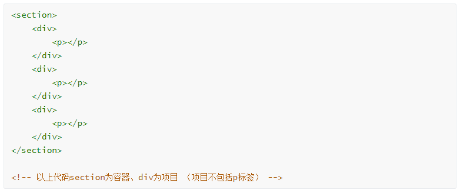
2、行和列
行和列：容器里面的水平区域称为"行"，垂直区域称为"列"。
3、单元格
单元格：行和列的交叉区域，称为"单元格"。

4、网格线
网格线：划分网格的线，称为"网格线"。水平网格线划分出行，垂直网格线划分出列。

注意：组成一个网格：需要5条线，2条横线，2条总线
注意：组成一个1行2列的网格，需要5条线，2条横线，3条总线
注意：组成一个2行1列的网格，需要5条线，3条横线，2条总线
结论：如果一个m行n列的网格，需要m+1+n+1条线，m+1条横线，n+1条总线
含义：网格布局中的属性和flex中的布局属性类似，分为了两类，一类容器属性；一类是项目属性
1、触发网格布局
给父元素添加display:grid
display关于网格的取值分为两个，grid(块网格)和inline-grid(行内网格，行内块)
grid===容器从上向下排列
inline-grid===容器从左向右排列
2、行列划分
规定行属性：grid-template-row:
固定列属性：grid-template-column:
后面的取值数量代表的是多少行，多少列
1)绝对大小(根据列数或者行数确定值的个数) 例：200px 200px 200px
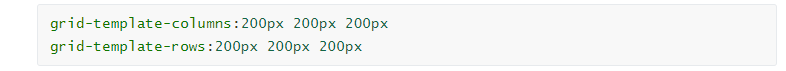
2)百分比（根据列数或者行数确定值的个数） 例：33.33% 33.33% 33.33%
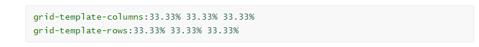
3)功能函数：repeat()
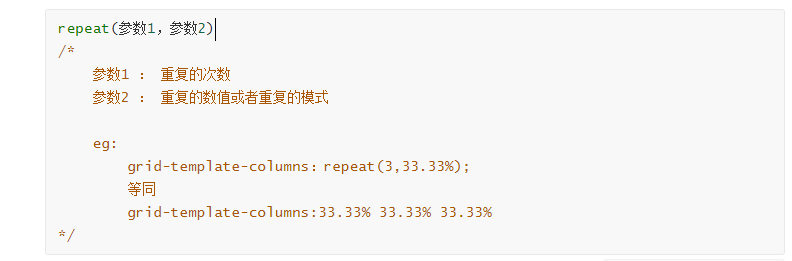
4)auto-fill关键字( 自动填充 )配合功能函数使用
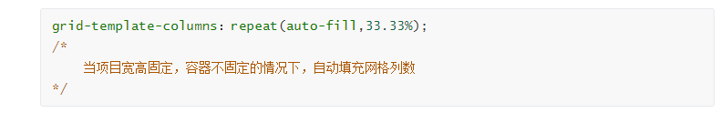
5)fr关键字(列宽片段)
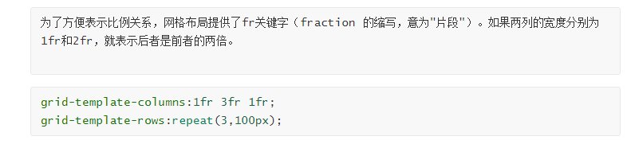
6)minmax() 功能函数
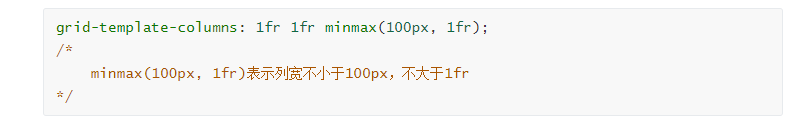
7)auto 关键字 自动填充
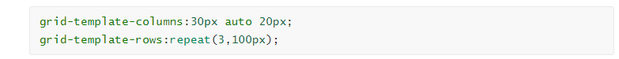
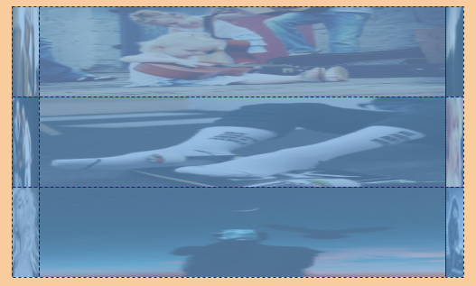
8)网格线名称
网格线命名的时候时候[]在每一个单元格的左右
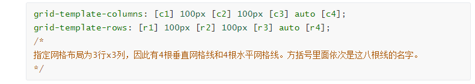
3、列间距（重点：复合属性）
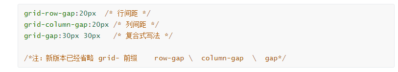
4、指定区域
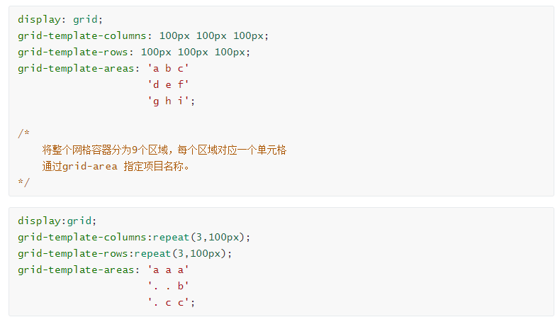
合并的时候使用grid-area:网格名字；进行合并
例如上图案例：.box{grid-area:a}
5、项目排列顺序
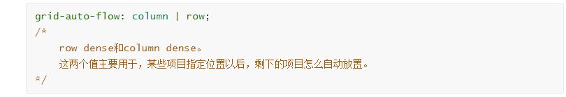
6、单元格内容对其（重点：复合属性）
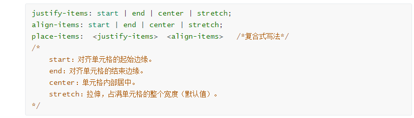
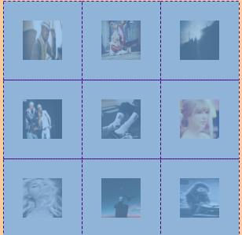
7、单元格项目对其（重点：复合属性）
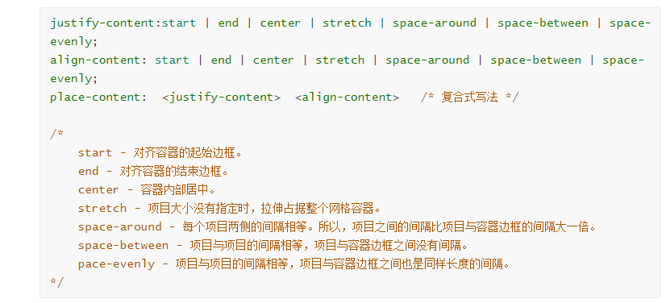
1、网格线合并(单一属性)
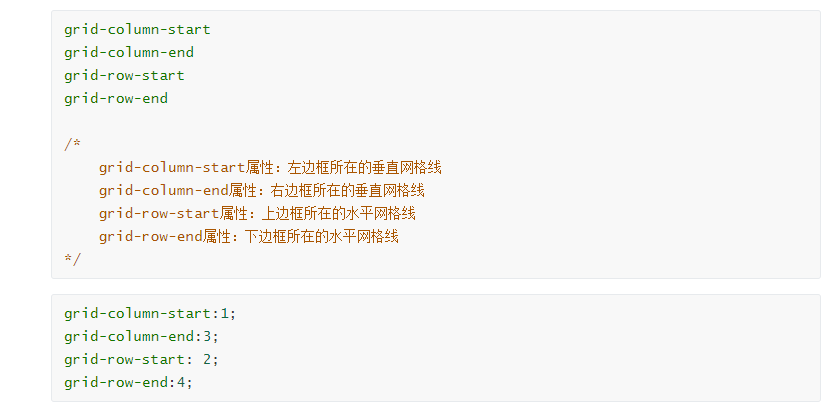
2、grid-column ， grid-row (重点，重点，重点)
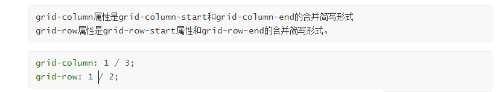